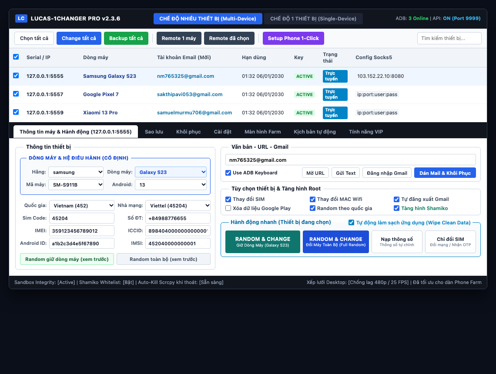
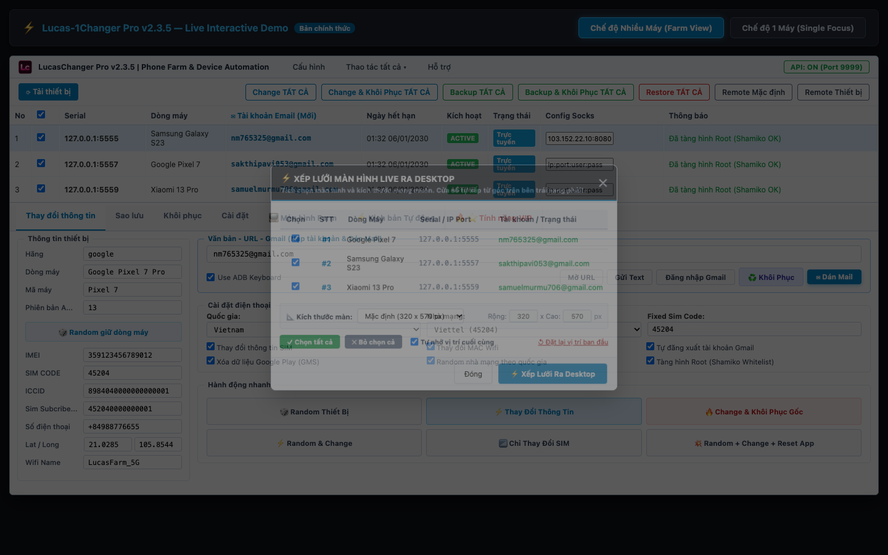

LUCAS-1CHANGER PRO v2.3.6
Cẩm Nang Hướng Dẫn Sử Dụng & Vận Hành Hệ Thống Phone Farm Tự Động Hóa Chuyên Nghiệp
📑 Danh Mục Hướng Dẫn Nhanh:
⚡ 1. Tự Động Quét, Bổ Sung Môi Trường & Kích Hoạt LSPosed (Zero-Touch 100%)
Hệ thống Lucas-1Changer Pro v2.3.6 vận hành hoàn toàn tự động theo cơ chế Zero-Touch Auto-Provisioning. Khách hàng chỉ việc cắm cáp USB vào máy tính — toàn bộ quy trình nạp môi trường, cấp quyền và kích hoạt LSPosed sẽ diễn ra tự động 100%, tuyệt đối không cần chạm tay vào màn hình điện thoại!
Cơ Chế Tự Động Hóa Đột Phá Trên Bản v2.3.6:
- Tự động quét thiết bị khi cắm cáp: Ngay khi cắm điện thoại vào máy tính hoặc bật tool, phần mềm tự động nhận diện danh sách thiết bị và kiểm tra chi tiết trạng thái môi trường (Root, Zygote, Lucas Spoofer, Device Info, ADBKeyboard và trạng thái kích hoạt LSPosed).
- Tự động nạp gói lõi còn thiếu trong nền (Silent Provisioning): Nếu phát hiện thiết bị mới cắm vào chưa có đủ môi trường, hệ thống tự động tải và cài đặt trong nền mà không làm gián đoạn hay hiện popup phiền phức.
- TỰ ĐỘNG KÍCH HOẠT MODULE TRONG LSPOSED & GÁN PHẠM VI SCOPE:
Lucas-1Changer Pro v2.3.6 tích hợp động cơ can thiệp Root độc quyền:
- Tự động ghi cờ kích hoạt module
com.lucas.spoofervào cấu hình/data/adb/lspd/của LSPosed. - Tự động quét và gán toàn bộ phạm vi Scope cho:
android(Khung hệ điều hành),Google Play Services,Google Play Storevà toàn bộ các ứng dụng bên thứ 3 đang có trên máy. - Tự động thực hiện Soft Reboot Zygote (chỉ mất 2 giây) để Zygote nạp ngay hook mà không cần khởi động lại nguồn máy.
- Tự động ghi cờ kích hoạt module
- Không cần mở app LSPosed Manager bằng tay: Khách hàng không cần phải đi tìm app LSPosed, không cần gạt công tắc hay tick chọn app thủ công trên từng máy nữa!
- Nút [ Setup Phone 1-Click ] cho dàn Farm: Khi cắm đồng loạt dàn máy 10 đến 50+ thiết bị vào Hub USB, người dùng chỉ cần bấm nút Setup Phone 1-Click trên thanh công cụ để khởi tạo và kích hoạt toàn bộ dàn máy cùng một lúc chỉ trong vài giây.
📱 2. Bảng Điều Khiển Giao Diện Mới v2.3.6 & Phân Cấp 4 Nút Đổi Máy Chuẩn
Phiên bản v2.3.6 mang đến sự lột xác toàn diện về mặt giao diện người dùng (dựa trên Mockup Demo v8 đã được chuẩn hóa), tập trung vào sự tối giản, hiện đại và tốc độ thao tác vượt trội.

Các Cải Tiến Giao Diện Cốt Lõi Trên Bản v2.3.6:
- 1. Tinh gọn bề ngang cửa sổ về 1100px: Loại bỏ toàn bộ khoảng thừa hai bên lề, tối ưu góc nhìn cho mọi độ phân giải màn hình từ Laptop Full HD đến Màn hình đồ họa 4K.
- 2. Top Action Bar phẳng hóa chuyên nghiệp: Loại bỏ các nút chức năng thừa hoặc trùng lặp (nút Làm mới cấu hình, Đăng xuất, Bật/tắt log và nút Xếp lưới nhỏ phía trên). Các nút bấm hiển thị văn bản phẳng chuẩn mực, sang trọng, nói không với icon màu mè rối mắt.
- 3. Khung viền riêng biệt [Dòng máy & Hệ điều hành (Cố định)]:
Bao bọc 4 trường thông tin thiết bị cốt lõi trong một viền riêng biệt:
Hãng (Brand): Samsung, Google, Xiaomi, OPPO, Sony, Vivo...Dòng máy (Device Line): Galaxy S23, Pixel 7 Pro, Xiaomi 13 Ultra, Xperia 1 V...Phiên bản Android (OS): Android 14, Android 13, Android 12, Android 11...Tên phiên bản (Release Name): Upside Down Cake, Tiramisu, Snow Cone...
- 4. 8 Ô thông số phần cứng đối xứng 2 cột tăm tắp: Bố trí ngăn nắp, cân đối tuyệt đối giữa Cột trái (Mã máy, Nhà SX, Tên thiết bị, Bo mạch) và Cột phải (Build Fingerprint, IMEI, Android ID, WiFi MAC).
- 5. Bộ đôi nút xem trước thông số (Màu Xám Slate):
- Random giữ dòng máy (xem trước): Sinh toàn bộ IMEI, Android ID, MAC, Serial... mới tinh nhưng giữ nguyên Hãng và Dòng máy đã chọn.
- Random toàn bộ (xem trước): Đổi ngẫu nhiên toàn bộ trường thông số sang một dòng máy mới bất kỳ trong kho dữ liệu.
- 6. Nút gộp thông minh [ Dán Mail & Khôi Phục ] (Màu Xanh Dương):
Gộp 2 bước rườm rà thành 1 chạm: Tự động trích xuất chuỗi định dạng Email từ bộ nhớ tạm Clipboard (dạng
mail|pass|2fa|recovery...), lưu trữ vào danh mục quản lý và kích hoạt ngay tiến trình Bung nén khôi phục (Restore App Data).
Phân Cấp 4 Nút Hành Động Chuẩn (Thực Thi Trực Tiếp Lên Điện Thoại):
RANDOM & CHANGE (Giữ Dòng Máy: Galaxy S23)
(Sinh mới IMEI, Android ID, MAC, Serial... nhưng bảo toàn 100% dòng máy đang kết nối)
👉 Đây là nút được sử dụng thường xuyên nhất trong nuôi tài khoản và cày Phone Farm. Nút tự động hiển thị tên dòng máy của thiết bị đang kết nối. Bấm nút này sẽ tráo đổi toàn bộ danh tính thiết bị nhưng giữ nguyên vẹn form dáng, cấu hình chuẩn của dòng máy hiện tại.
🖥️ 3. Xếp Lưới Màn Hình Live Ra Desktop & Hotfix Scrcpy Chống Lag PC Yếu
Tính năng mở màn hình Scrcpy trực tiếp toàn bộ dàn máy ra Desktop để người dùng điều khiển chuột và phím thuận tiện, kết hợp các bản vá tối ưu phần cứng độc quyền trên v2.3.6.

Chuẩn Hiển Thị Sắc Nét Cao & Tối Ưu Stream Scrcpy (Nâng cấp v2.3.6):
- Mặc định 1080p Full HD siêu nét (8 Mbps, 30 FPS): Khác với các công cụ thông thường bị mờ nhòe chữ số, Lucas-1Changer Pro v2.3.6 thiết lập mặc định độ phân giải decode 1080p với Bitrate 8 Mbps chuẩn nét căng. Giúp người dùng đọc rõ từng chữ số IMEI, serial, email và chi tiết nhỏ nhất trên ứng dụng mà không bị vỡ hạt.
- Tùy chọn Độ nét & Tối ưu đa dạng:
Hộp thoại Xếp lưới cung cấp 4 chế độ tối ưu linh hoạt cho mọi dàn máy:
- 1080p - Sắc nét cao (Chuẩn nét căng - Mặc định): Decode 1080p, Bitrate 8 Mbps, 30 FPS. Khuyên dùng để nhìn rõ nhất.
- 720p - Tiêu chuẩn mượt mà: Decode 720p, Bitrate 4 Mbps, 30 FPS. Cân bằng tối ưu khi mở đồng thời từ 10 - 20 máy.
- Gốc (Native 100% - Không nén): Giữ nguyên độ phân giải gốc của máy thật, Bitrate 12 Mbps, 60 FPS cho độ sắc nét tối đa.
- 480p - Tiết kiệm CPU: Decode 480p, Bitrate 2 Mbps, 25 FPS. Dành riêng cho máy tính văn phòng cấu hình rất yếu.
- Tự động làm mới cấu hình Scrcpy khi Xếp Lưới: Khi người dùng chọn cấu hình độ nét mới và bấm Xếp lưới, hệ thống tự động nhận diện và làm mới tiến trình Scrcpy cũ để áp dụng ngay lập tức thông số vừa chọn, tuyệt đối không bị khóa cứng ở độ phân giải cũ.
- Tùy chọn Tắt màn hình thiết bị khi remote (
--turn-screen-off): Màn hình vật lý của điện thoại sẽ tự động tắt đen trong khi cửa sổ máy tính vẫn hiển thị sắc nét. Giúp thiết bị cực kỳ mát mẻ, chống chai phù pin và tiết kiệm điện năng tối đa khi cày dàn farm 24/7. - Cơ chế tự động dọn sạch tiến trình ngầm (Scrcpy Ghost Process Cleaner):
Tất cả tiến trình
scrcpy.exevà các luồng ADB phụ sẽ tự động được quét và kết thúc triệt để ngay khi đóng Lucas-1Changer Pro hoặc khi bấm Đặt lại vị trí. Cam kết không bao giờ để lại tiến trình rác chạy ngầm làm nghẽn RAM máy tính.
Các bước xếp lưới màn hình:
- Tại thanh công cụ đỉnh màn hình, bấm nút: ⚡ Tự xếp lưới Desktop.
- Chọn kích thước hiển thị: Mặc định (320x570), Tiêu chuẩn (280x500), Nhỏ gọn (240x426), Lớn (360x640), Rất lớn (400x710), hoặc Tự co giãn vừa Desktop.
- Tick chọn các máy bạn muốn mở (hoặc bấm [✓ Chọn tất cả]).
- Bấm nút ⚡ Bắt Đầu Xếp Lưới Ngay. Các cửa sổ sẽ tự động căn góc trên bên trái Desktop (
Left + 2, Top + 2), dàn từ trái sang phải theo thứ tự#1, #2, #3...và tự xuống hàng khi chạm mép phải Desktop. - Ghi nhớ vị trí (Desktop Slot Memory): Nếu bạn tự tay kéo cửa sổ sang vị trí khác, hệ thống sẽ tự động nhớ tọa độ đó cho các lần mở tiếp theo!
🤖 4. Kịch Bản Tự Động Hóa Auto Workflow Studio (Nạp Game & Thẻ Tự Động)
Tự động hóa hoàn toàn chu trình: "Đổi máy sạch -> Mở game/web -> Nạp thẻ thanh toán -> Nghỉ giãn cách -> Đổi sang thẻ tiếp theo" mà không cần thao tác thủ công bằng tay.
Bước 1: Chọn Game / App hoặc Dán Link Thanh Toán
- Nhập đường dẫn trang web thanh toán hoặc chọn gói ứng dụng game (Free Fire, Tốc Chiến, Genshin...).
- Hệ thống tự động bật ứng dụng hoặc mở trình duyệt web đến đúng địa chỉ trên thiết bị.
Bước 2: Nạp Danh Sách Thẻ Thanh Toán (CC / VCC)
- Bấm nút Nhập thẻ từ file hoặc Dán thẻ mẫu: Hệ thống tự động phân loại thẻ (Visa, Mastercard, Amex, JCB...).
- Hệ thống bốc lần lượt từng thẻ để thanh toán. Tự động bỏ qua thẻ lỗi và tạm dừng an toàn khi gặp mã lỗi 16 (Google Play Declined) để chống khóa thẻ hàng loạt.
Bước 3: Cài Đặt Gói Nạp & Chống Quét Bot Thông Minh
- Điền mã gói game bạn muốn mua (Package / Tier).
- ⚡ Cơ Chế Giãn Cách Thời Gian Giữa Các Gói Nạp:
Tùy chỉnh số giây nghỉ giữa mỗi lần nạp liên tiếp (ví dụ: 3 đến 5 giây). Khi tích chọn "Ngẫu nhiên giãn cách", hệ thống sẽ tự động nhảy số giây nghỉ ngẫu nhiên trong khoảng [Min - Max], mô phỏng hoàn hảo hành vi bấm tay của người thật để vượt qua các thuật toán chống bot khắt khe nhất của Google Play.
🛡️ 5. Sao Lưu, Khôi Phục & Lá Chắn Sandbox Tar Extraction Shield
Phân hệ sao lưu (Backup) và nạp lại hồ sơ (Restore) được thiết kế chuyên biệt để bảo toàn 100% tài khoản Google, token, app data mà không bao giờ làm hỏng hệ điều hành máy.
Lá chắn bảo vệ toàn vẹn Sandbox Shield (Bản quyền Lucas):
- Nguyên lý: Toàn bộ thao tác trích xuất và bung nén dữ liệu ứng dụng (Tar extraction) được giám sát bởi mã thông báo toàn vẹn
RESTORE_SANDBOX_INTEGRITY_TOKEN. - Chống can thiệp trái phép: Ngăn chặn triệt để tình trạng trích xuất nhầm vào các phân vùng hệ thống, bảo vệ an toàn phân vùng Root và không làm mất dữ liệu của các ứng dụng khác.
- Bảo toàn quyền hạn (Chown & Restorecon): Khi bung nén data, tool tự động khôi phục đúng UID/GID của ứng dụng mục tiêu và gán lại nhãn bảo mật SELinux, đảm bảo app mở lên mượt mà, không bị văng do lỗi Permission Denied.
Quản lý hồ sơ & Nhập dữ liệu từ tool cũ:
- Hỗ trợ tính năng [ ⬇ Nhập từ Tool cũ ]: Tự động quét và chuyển đổi dữ liệu backup từ các tool khác trên thị trường (gói nén
app_data.tar.gz, danh sáchListAppbackup.txt...) sang cấu trúc chuẩn của Lucas. - Hỗ trợ phân bổ tự động ghép cặp 1:1 giữa danh sách hồ sơ đã tick và dàn máy đang kết nối.
🔧 6. Cơ Chế Can Thiệp Sâu Phần Cứng Trên Điện Thoại Thật
Trên các dòng điện thoại thật chạy Android 10, 11, 12, 13, 14 (đặc biệt là Samsung, Xiaomi, Google Pixel, OnePlus), việc đổi thông số đòi hỏi can thiệp sâu vào các phân vùng hệ thống.
Các công nghệ can thiệp sâu độc quyền:
- Bộ quét binary resetprop đa nền tảng: Tự động tìm kiếm và thực thi
resetproptrên mọi giải pháp Root hiện nay (Magisk 20-27+, KernelSU, APatch, system binary) kể cả trong môi trường Non-interactive Shell. - Ghi đè sâu toàn bộ thuộc tính Android Treble:
Ghi đè đồng bộ các phân vùng:
ro.product.model,ro.product.system.model,ro.product.vendor.model,ro.product.odm.model,ro.product.product.model,ro.product.system_ext.model... áp dụng cho cả Model, Brand, Manufacturer, Device, Fingerprint. - Cập nhật SSAID Google Services độc lập:
Ghi trực tiếp mã SSAID vào cơ sở dữ liệu hệ thống
/data/system/users/0/settings_ssaid.xmlgiúp Google Play Services nhận diện ngay ID thiết bị mới, chống trùng lặp tài khoản. - Khởi động lại Zygote an toàn trong 2 giây:
Thực thi lệnh
setprop ctl.restart zygotegiúp System Server nạp lại toàn bộ cấu hình mới mà không cần reboot phần cứng, tiết kiệm 95% thời gian chờ đợi.
⭐ 7. Phòng Điều Khiển Phone Farm VIP (Multi-Device Matrix)
- Tường Màn Hình (Screen Wall): Xem trực tiếp đồng thời hàng chục màn hình máy trên một khung hiển thị, hỗ trợ các cỡ xem 165px, 210px, 270px.
- Điều Khiển Đồng Bộ (Master Sync Control): Chọn 1 máy làm Master (Máy chính), mọi thao tác chạm, vuốt màn hình, mở app, gõ bàn phím trên máy Master sẽ được đồng bộ 1:1 sang tất cả các máy Slave trong farm.
- Ma Trận Proxy (Proxy Matrix): Gán mỗi máy một IP mạng riêng biệt theo chuẩn
IP:PorthoặcIP:Port:User:Pass, giúp mỗi máy trong dàn có một đường truyền mạng sạch riêng rẽ. - Chế độ Siêu Tiết Kiệm Eco-Farm: Cho phép hạ FPS xuống 15-30 và Bitrate xuống 1-2 Mbps, giúp máy tính PC yếu vẫn có thể cắm và điều khiển mượt mà 50 - 100 máy Android cùng lúc mà không nóng máy hay giật lag.
- Chế độ 1 Máy (Single Focus View): Bấm nút
[🖥️ Xem 1 máy]để chuyển sang giao diện điều khiển tập trung 1 thiết bị duy nhất với đầy đủ khung phím bấm tiện ích.

🔄 8. Cơ Chế Cập Nhật Tự Động OTA 1-Click
Lucas-1Changer Pro tích hợp cơ chế cập nhật tự động qua mạng (Over-The-Air Update) kết nối trực tiếp với máy chủ CDN GitHub chính thức của Lucas Team.
- Tự động kiểm tra khi mở phần mềm: Mỗi khi khởi động, ứng dụng sẽ tự động đối soát phiên bản đang chạy với phiên bản mới nhất trên máy chủ. Nếu có bản cập nhật mới (ví dụ v2.3.6), một thông báo với đầy đủ Changelog sẽ xuất hiện.
- Cập nhật 1-Click không gián đoạn: Chỉ cần bấm "Cập nhật ngay", công cụ tự động tải file thực thi mới, giải nén và nạp lại cấu hình mượt mà, không làm mất bất kỳ dữ liệu cài đặt hay hồ sơ backup nào.
- Kiểm tra cập nhật thủ công: Tại thanh trạng thái dưới cùng bên phải của phần mềm, bạn có thể bấm nút 🔄 Kiểm tra cập nhật bất kỳ lúc nào để tải bản cập nhật mới nhất.
- Mở nhanh Hướng dẫn sử dụng: Bấm nút 📖 Hướng dẫn sử dụng ở góc dưới phải để mở ngay tài liệu cẩm nang này!
🛠️ 9. Xử Lý Sự Cố Thường Gặp (Troubleshooting FAQ)
| Hiện Tượng / Lỗi | Nguyên Nhân | Cách Khắc Phục Nhanh |
|---|---|---|
| Không nhận máy (0 thiết bị) | Cáp sạc không hỗ trợ data, chưa bật USB Debugging, hoặc chưa bấm "Luôn cho phép". | Dùng cáp USB truyền data tốt, cắm vào cổng USB sau case PC hoặc Hub có nguồn phụ. Bấm "Luôn cho phép" trên điện thoại rồi bấm "🔄 Làm Mới Dàn Máy". |
| Máy từng dùng tool khác bị lỗi văng app | Tàn dư hook và file config cũ trong hệ thống làm xung đột. | Bấm nút ⚡ SETUP PHONE 1-CLICK trên thanh công cụ -> Đảm bảo đã tích ô "Dọn sạch tàn dư tool cũ" -> Bấm Bắt đầu cài đặt. Tool sẽ quét sạch trong 3 giây. |
| Báo lỗi bản quyền HWID Mismatch | Tài khoản đã đăng nhập trên máy tính khác trước đó. | Mỗi tài khoản gắn với 1 máy tính. Nếu bạn đổi PC, hãy gửi mã HWID hiển thị trên form đăng nhập cho Admin để reset trên hệ thống máy chủ. |
| App ngân hàng / Game phát hiện Root | Chưa cấu hình ẩn Root cho app mục tiêu. | Vào Magisk/KSU/APatch -> Bật Enforce DenyList -> Thêm app mục tiêu vào DenyList -> Dùng tính năng "Ẩn ứng dụng Magisk" để đổi tên gói cài đặt. |
| Màn hình Scrcpy bị giật hoặc mờ khi mở nhiều máy | Tùy thuộc vào cấu hình PC và số lượng máy cắm vào. | Nếu thấy mờ chữ: Tại hộp thoại Xếp Lưới, chọn 1080p - Sắc nét cao (bitrate 8 Mbps). Nếu mở dàn từ 15-30 máy và PC bị chậm, chọn 720p hoặc 480p để giảm tải CPU và USB bus. |
Phát triển & Phân phối độc quyền bởi Lucas Team. Mọi quyền được bảo lưu.